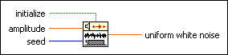

Uniform White Noise PtByPt VI
Owning Palette: Signal Generation PtByPt VIs
Requires: Full Development System
Generates a uniformly distributed, pseudorandom pattern whose values are in the range [–a:a], where a is the absolute value of amplitude.
This VI is similar to the Uniform White Noise VI.
 | Note By default, reentrant execution is enabled in all Point By Point VIs. |

 Add to the block diagram Add to the block diagram |
 Find on the palette Find on the palette |